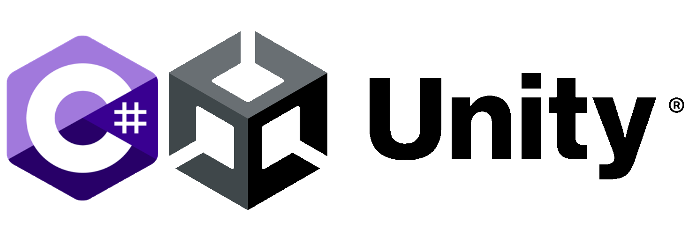

Personal Projects:
Unity C# Projects:
Quasar Quest
Quasar Quest is set in a procedurally generated galaxy, you dodge cosmic obstacles to get a higher score, get coins to buy upgrades for your ship or new ship skins. You can also complete infinitely many automatically generated missions for coins. I made Quasar Quest in Unity C# in the summer of 2024.
Mobile Apps
In 2021 I created several mobile games for the mobile Android platform, available on the google play store. I programmed these games in C#/Unity. This taught me skills in mobile app development, releasing different versions of games for the google playstore, and optimizing apps across devices. The above games are available on the google play store for free. Here is the download page for Jesting Jetpacker. Here is the download page for Ball Hop.

A GitHub repository of my Unity C# projects code

I enjoy writing solutions to programming problems on websites such as Project Euler, CodeForces and LeetCode. I love the problem solving for the higher number Project Euler problems, utilising concepts from mathematics such as number theory or even graph theory. I also enjoy occasionaly joining programming competitions on CodeForces. I tend to write my solutions in Python but I have started writing several in Rust for its efficiency.

A GitHub repository of my solutions to different programming challenges
Toy Interpreter
In July 2025 I wrote a Toy Interpreter in Python from scratch without referencing formal grammar theory, abstract syntax trees or existing interpreter architectures for educational purposes. My aim was to discover
fundemental compiler and interpreter concepts through hands-on creative problem solving and experimentation to provide a deeper insight for the why formal methods exist rather than copying them from textbooks.
Features at a glance:
- Expression evaluation with proper operator precedence (using Reverse Polish Notation)
- Nested control structures with stack-based management
- Multi-pass design: tokenization → parsing → execution
- Dynamic typing with explicit type declarations
- Simple but complete language supporting variables, conditionals, loops (via goto), and I/O
Some example programs included a binary search guessing game, the Euclidean algorithm, calculating the first n Fibonacci numbers, approximating Eulers number to arbitrary precision amongst others.

A GitHub repository of the code for the interpreter as well as the example programs
Professional Experience
Nothing to see yet..
Education
Nothing to see yet..